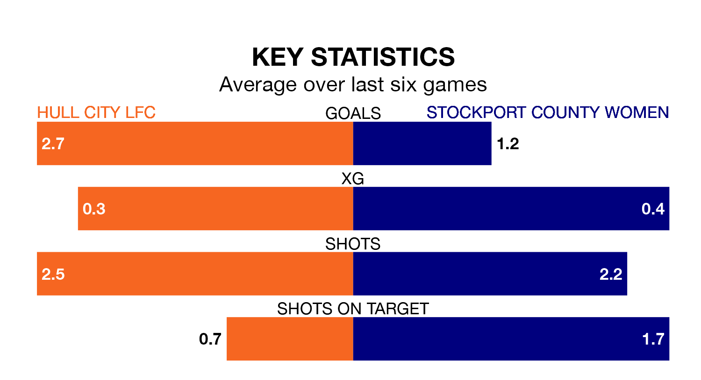

Hull City LFC face a challenge to maintain their high-scoring form at home against a tight Stockport County Women defence on Sunday.
With 34 goals in 12 games, Hull City are the top scorers in Women's National League Division One North ahead of the 2pm kick-off.
They face a Stockport County side who have scored 18 in 14 matches, but conceded only 12 goals, putting them joint-third among the league's tightest defences – only Middlesbrough Women and Durham Cestria WFC have conceded fewer goals.
Hull City are top of the table after 12 games, of which they have won nine and drawn one, earning 28 points.
Stockport County are four places behind the home team in fifth, with six wins and five draws putting them on 23 points.
Hull City are in reasonable form in Women's National League Division One North, with four wins and two losses from their last six games.
With three wins and two draws over that period, the visitors' form is slightly worse – they have taken 11 points from 18, compared to Hull City's 12.
In the last three years, Hull City and Stockport County have played each other on three occasions. Stockport County won one of them and they drew the other.
Their last meeting was on September 24, when they played out a 1-1 draw.
Hull City's last match was on February 4, a 3-2 win against Norton and Stockton.
Stockport County beat York City LFC 1-0 last time out, on January 28.
Updated: 13:52 (UTC), 05/02/24